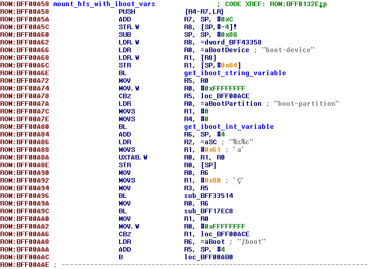

Few notes about iOS 10 dualboot
This isn't comprehensive guide, just few notes about problems you might run into if you're trying to dualboot iOS 10 manually and their solving. I haven't dug in it deep, so there must be more elegant solutionsBootchain
boot-command=upgrade
In iOS 10 bootloaders, upgrade boot-command's behaviour is slightly changed. For some unobvious reason iBEC (iBEC and iBoot are same thing now, by the way) refuses to mount upgrade partition. Well, at least it did in my case. Also now it doesn't spawn shell after upgrade failure, but writes failure reports to NVRAM and then reboots insteadHow upgrade partition is mounted in iOS 6
Let's look how upgrade partition was mounted in old iOS 6 bootloader:First it sets boot-partition variable to 2, without syncing with NVRAM though:
set_iboot_variable("boot-partition", "2", 0);
Then it calls special function (mount_hfs_with_iboot_vars()) which mounts HFS with index set in boot-partition variable from block device which name is set in boot-device variable. Its (partial) disassembly:
If partition was mounted succesfully, iBEC loads APTicket, Apple logo, Device Tree and so on
How upgrade partition is mounted in iOS 10
In iBoot Stage 2 from iOS 10 mount_hfs_with_iboot_vars() function was replaced by some new one:As was mentioned above, for some unobvious reason it doesn't work when you set up everything manually. Luckily mount_hfs_with_iboot_vars() is still here (it's used to load diags image from filesystem, for example):
Patch upgrade routines to make it use mount_hfs_with_iboot_vars() as it has always been in iOS 4, 5, 6 and 7 (not sure about 8):

Now upgrade partition should be mounted just fine
Apple logo patch
It's not needed anymore. It's hard to believe, but iOS 10 bootloaders are able to load and show it to you without any patchesno-effaceable-storage
How no-effaceable-storage works in iOS 6:- BAG1 locker is ignored. System keybag is stored unencrypted as result
- Dkey is ignored as well. Files with NSProtectionNone protection class are encrypted with static fake key. Yes, that AppleKeyStore: disabling use of effaceable storage, using fake key message in kernel log refers to Dkey; if your Data volume has no protect flag, this message won't be shown
- LwVM locker seems to be not ignored. Data partition for second system may have encryption flag in partition table, but still successfully read by second system
...and fixed key used instead. You can try deal with it by removing encryption flag from partition entry, but I simply left Effaceable Storage enabled. In this case you have to copy system keybag from first system to second one
Activation
Apple disallows activation on iOS versions lower than 10.0 if your device was ever activated on iOS 10.0 or newer. Although today (20.01.18) this policy seems to be cancelled, I still don't recommend to take a risk. Instead you should copy your activation record from first system to second oneActivation is just plist called activation_record.plist if your device has got baseband or pod_record.plist if not. On old devices (e.g. iPhone 4 or 3GS) it was called wildcard_record.plist
- On iOS 6 and 7 it's stored at /private/var/root/Library/Lockdown/activation_records
- On iOS 9 it's stored at /private/var/mobile/Library/mad/activation_records
Important note: in order to prevent reactivation add albert.apple.com to /etc/hosts
Also don't try to remove setup assistant application, this will make your device stuck with Apple logo and progress line on display forever
Data volume
If you set protect flag to HFS volume and it has ever been mounted on iOS 9+, this volume won't be mountable on iOS 8 and lower. Don't forget about it and copy all the data you want (keybag, activation records, something else maybe) before first boot of iOS 10Also don't forget to copy /private/var/* directory structure to iOS 10's data volume, it's important